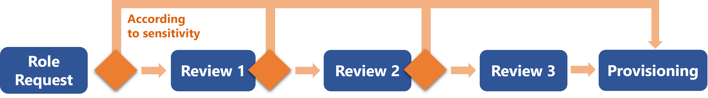
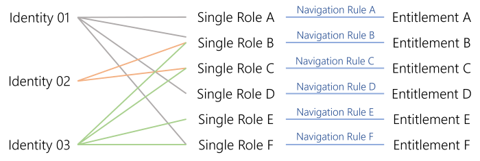
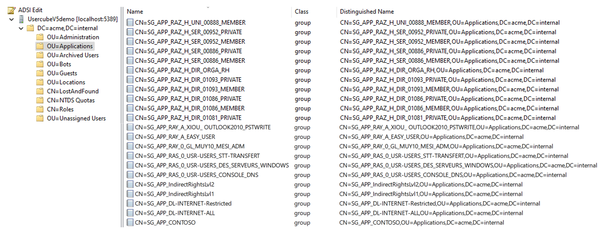
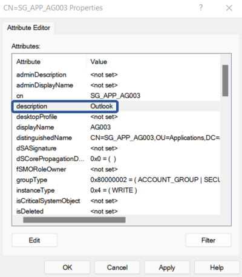
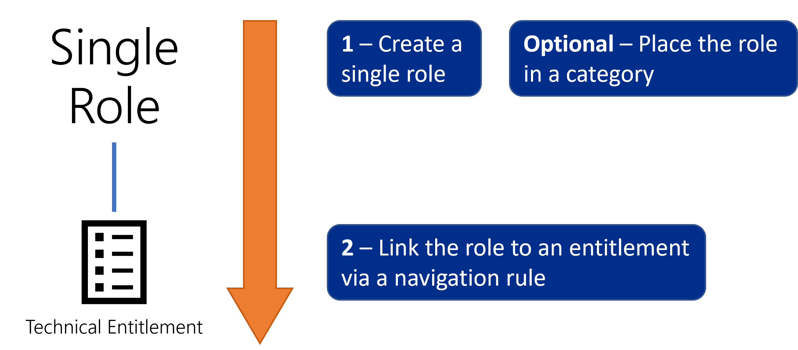
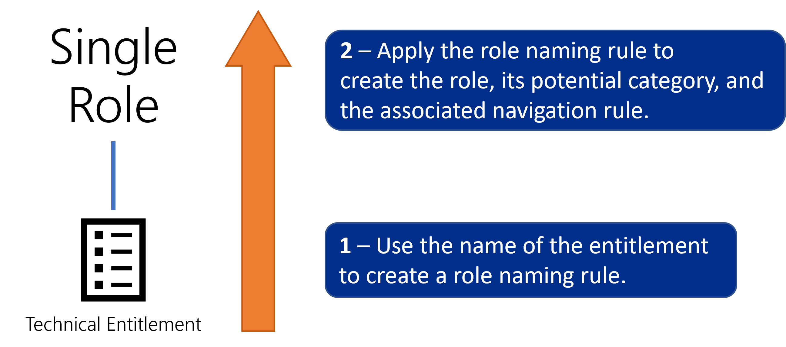

Create Roles in the Role Catalog
How to define Single Role to model entitlements, and organize them in the role catalog, basis of the role model. See the Entitlement Management topic for additional information.
The creation of the role catalog is a time-consuming part, with an important workload concerning the description of the internal processes for all applications. Actors here need to really understand the useful permissions within managed applications.
Overview
The aim here is to establish and create the exhaustive list of Role Model needed by the organization. Roles are a way to represent entitlements which are assigned to identities, so that said identities are able to work with the managed systems.
In other words, establishing the role catalog aims to list exhaustively and explicitly all the roles in the organization, hiding the technical complexity of entitlements behind the business vision of user-friendly names and categories, in order to:
- assign roles to users, by requesting them manually, or using rules that assign roles automatically based on users' attributes;
- simplify the implementation of Segregation of Duties (SoD);
- simplify the implementation and execution of access certification campaigns.
Roles are not chosen at random as they must correspond to the way entitlements were modeled during connector modeling.
Technical Principles
Identity Manager's roles are all built the same way. Technically speaking:
-
a role is part of a policy which is a subgroup of the role model. See the Entitlement Management topic for additional information.
Let's take the example of the unlimited Internet access, part of the default policy.
-
a role is created to be owned by users represented by a given entity type;
We choose users from
Directory_User. -
roles need to be structured so categories are created to:
- represent groups of roles that follow the same validation process with the same validator(s);
- help users find intuitively the entitlement that they are looking for.
NETWRIX recommends creating one category per application, as this method often fulfills both requirements.
Then single roles can be grouped together through Composite Role for applicative purposes, allowing users to be assigned several entitlements simultaneously. Leave composite roles for later, when the system runs as is and would benefit from an additional layer in the role model.This role is part of the previously created
Internetcategory. -
a role is created with a given approval workflow according to the entitlement's sensitivity;

We choose to require one manual validation from a knowledgeable user before the Internet role is assigned to a user.
-
to be effective, roles must be linked to actual entitlements in the managed systems. Technically speaking, this means that for each entitlement that you want to assign through a given role, you must create a navigation rule to build said link. A navigation rule is specific to one resource type. See the Categorize Resources topic for additional information.
We link the role to the entitlement named
SG_APP_DL-INTERNET-ALLin the AD, via a navigation rule that assigns this entitlement to thememberOfproperty of AD nominative accounts, for all users having the role.This part is about single roles, dealing with entitlements one-to-one. The idea is to associate one single role with one fine-grained entitlement.

For example, an accountant needs read access to the accounting software, a project manager to their billable hours for their projects on SAP, etc.
When roles are well-defined, one entitlement request must lead to the direct functional entitlement assignment. No more, no less.
Strategy for Role Creation
Role structuring
Functionally speaking, the main benefit of roles is to give entitlements user-friendly names, easily understandable by managers. And to be understandable, roles must be structured.
The strategy for role creation and structuring varies according to the Model the Data established for a given system. Here, we will take as example the common use-case that organizes and categorizes roles by application. Then, the strategy varies whether the system hosts a single application (like SAB or SAP) or several (like the AD or LDAP).
In any case, role creation and maintenance are made easier by entitlements' naming conventions. Thus, no matter the kind of system that you are working with, if the system uses no naming conventions, then you should start by creating some. They will be the basis for role structure in Identity Manager, and will really simplify role creation.
One system for one application
A common and intuitive case is when a system is simply one application. Then, integrators can create one role per entitlement in said application, and one category for the application.
The SAP application is about entitlements only for itself. Then, we create a single role per entitlement in SAP inside a category called
SAP:

One system hosting several applications with existing naming conventions
If a given system is used to manage entitlements for several applications, then building categories becomes more complicated.
For example, the Active Directory usually hosts many groups used to manage entitlements in several distinct applications.

The goal here is to find a way to clarify the link between each entitlement and the corresponding application.
If the system uses naming conventions for entitlements, then it is possible to deduce the application it corresponds to, from the entitlements' names.
For example, a group is called
SG_APP_banking/digital/haumea/readerin the AD. The membership to this group gives an entitlement. Knowing the organization, integrators understand that this entitlement is about the departmentbanking, the positiondigital, the applicationhaumeaand the access rightreader.
Roles can be created accordingly, with one role per entitlement and a category per application.
One system hosting several applications without existing naming conventions
However, in the case of a connector for several applications, sometimes no information can be deduced from the entitlements' names. It is still necessary to find a way to clarify the link between each entitlement and the corresponding application.
Then, the solution is to add information inside the managed system, creating a specific field or filling an empty field.
For example in the Active Directory, integrators can modify the field called
descriptionto specify the application name (such as Outlook in this example).
Thus, the needed information is added to the managed system. After the execution of synchronization, said data is accessible inside Identity Manager database and can be used as a naming convention.
In some cases, integrators are not allowed to create/modify fields in the external systems. Then, the information can be added on Identity Manager side only. As the new field doesn't exist in the external systems, it can't be overwritten.
Automation of role creation
The UI provides tools to create single roles manually, working top-down from abstraction (role name) to the technical aspects (navigation rule and technical entitlement). Most projects use thousands of single roles, which makes role creation a long, tedious and repetitive process. See the Create a Role Manually topic for additional information.

Roles can also be created bottom-up via role naming rules. Instead of the previous process, you can use the name of said entitlement in your managed system to create automatically the corresponding single role and rule (and category if it does not already exist). In other words, Identity Manager's naming rules are to be based on your existing naming conventions for entitlements. See the Create Roles in Bulk topic for additional information.

One naming rule can generate many roles, so a few automatic rules can easily and faster create the single role catalog. Naming rules prove particularly useful when you need to add multiple new permissions in your external system. You won't have to create manually the corresponding categories, roles and rules as long as said permissions are created with properties matching the conditions from the rules.
NETWRIX recommends starting the role catalog with as many naming rules as possible before creating roles manually.
Participants and Artifacts
For a given managed system, integrators may need the help of the application owners who know the application's users, entitlements and data model.
| Input | Output |
|---|---|
| Connector's data
Model the Data
(required) Create a Provisioning Rule (required) Classify Resources (required) |
Single role catalog |
Create the Single Role Catalog
Create the single role catalog by proceeding as follows:
- Create as many single roles as possible (with their navigation rules and categories) via the Create Roles in Bulk naming rules.
- Complete the role catalog if needed by creating manually additional Create a Category and single roles with their navigation rules.
- Add Create a Composite Role to the single role catalog only if the project is mature enough. Composite roles are more complex than single roles and they are not mandatory.
Impact of Modifications
Perform a Simulation are available in order to anticipate the changes induced by a creation/modification/deletion in roles and navigation rules.
Next Steps
Once the role catalog is established, integrators can start role officer management.
The role catalog is also a prerequisite for Manage Risks management.